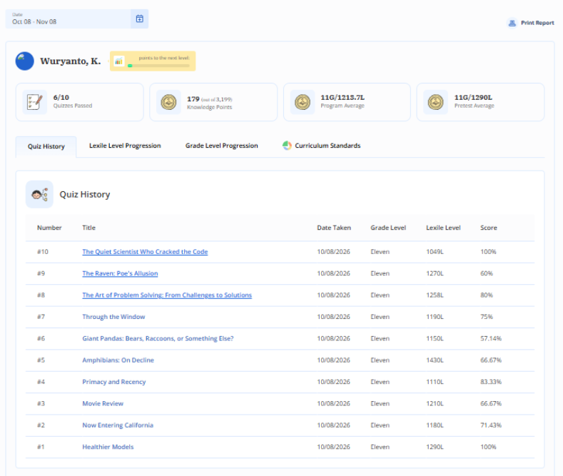

Curated by Kenrichie
Welcome to my learning portfolio! My name is Kenrichie Wuryanto from 10.1. This is my learning portfolio for Unit 2 about IELTS Writing. Below you can view some coursework that I have completed in this chapter, such as the initial and final draft of the PBL, as well as some others. Scroll down to look.
These are some descriptions of the assignments in this topic. Note that there is also ascreenshot of my Read Theory Progress this chapter too at the bottom of this page, not included in the list below.
The initial draft of the PBL. This was written in exam.net. I actually did this in Break 2 after Laurensia Cup because I could not do the test during the class originalally because I had to attend a Laurensia Cup Comittee meeting at that time. Click here to see what I wrote initally.
This is the 2nd draft of the PBL, which occurrd after peer feeedback. My peer was Joshua and we gave each other feedback using the Ladder of Feedback. Click here to see my draft that was revised sing the feedback Joshua gave me as well as some other revisions I did based on personal input.
This is the final draft of the PBL. This draft has already undergone all the previous revisions above as well as AI revision and teacher feedback. As such, this is my 4th and final draft. I believe this draft got around band 7 when it was evaluated. Click here to see the final draft.
Here are the assignments:
The first volume introduces the strange structure of the labyrinth. Its corridors appear ordinary at first, lined with shelves, reading tables, and countless volumes arranged according to an unknown system. Yet the deeper one travels, the less familiar the surroundings become. Shelves begin to repeat themselves, doorways appear where there were none before, and staircases descend into chambers that should not exist.
Volume I · The First Passage
According to the earliest records, the labyrinth was not constructed in the traditional sense. It is said to have grown from the accumulation of written knowledge, each new book creating another passage and every passage making room for another collection. Whether this account describes its true origin or merely an old librarian's theory remains unknown.
The second volume concerns the most unusual property of the labyrinth: its books contain other books. Opening a volume may reveal a smaller library within its pages, complete with shelves, passages, and collections of its own. These inner libraries are not illustrations or descriptions. They appear to possess their own structure, history, and inhabitants, existing independently of the volume that contains them.
Volume II · Pages Beyond Pages
Some scholars have suggested that these nested worlds are reflections of one another, while others believe each is entirely unique. A few records even describe books whose contents appear to change depending on the reader, presenting different passages to different individuals. The more one studies these volumes, the more difficult it becomes to distinguish the container from what it contains.
The final volume documents the deepest known regions of the labyrinth. Unlike the outer chambers, these passages contain very few shelves. Instead, they are occupied by enormous books, each bearing a title that cannot be found in any existing catalog. Their pages are said to contain incomplete stories, unfinished histories, and records of events that have yet to occur. Some are entirely blank, while others seem to continue writing themselves whenever they are left unattended.
Volume III · The Unwritten Chamber
Among these records is mention of a chamber containing a single unopened book. No catalog lists its title, and no surviving account describes what lies within. Those who claim to have reached the chamber never agree on its location. Perhaps it is the final volume of the labyrinth. Or perhaps it is simply another beginning.

Another fragment of knowledge discovered within the endless halls.
A library is more than a place where books are kept. It is a place where ideas are preserved, stories are given life, and knowledge passes from one generation to the next. The labyrinth may appear endless, but that is precisely what makes it worth exploring. Every discovery leads to another question, and every answer reveals something that was previously hidden from view.
I invite you to wander through these collections without expecting to find everything. Some books are meant to be read, others are meant to be questioned, and a few may be better left unopened. After all, the greatest mystery of a library is not how many books it contains, but how many worlds remain undiscovered within them.
— Sorc. Kenrichie, Keeper of the Endless Labyrinth